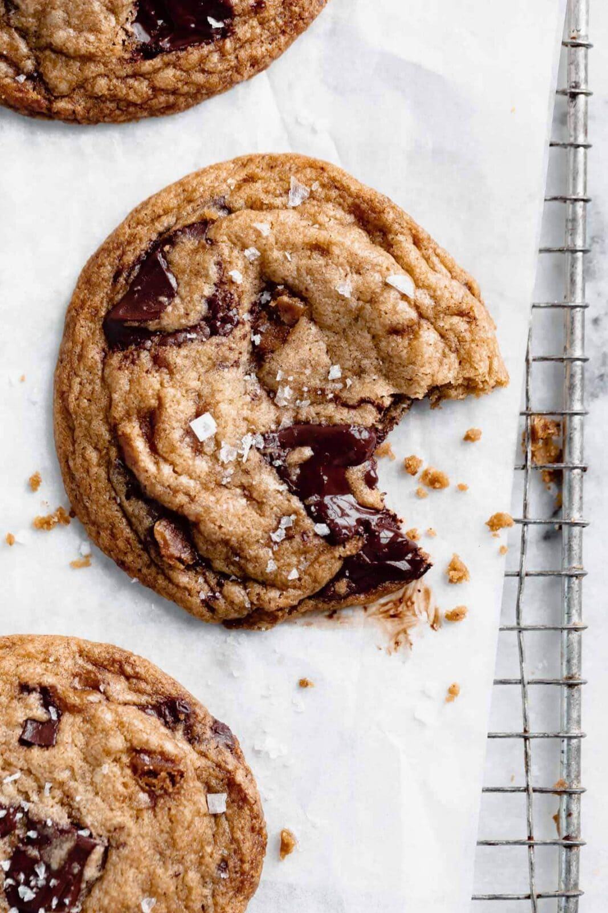

Brown Butter Toffee Chocolate Chip Cookies

Description
These brown butter toffee chocolate chip cookies taste straight from a bakery with a gooey center, crunchy edge, big pools of dark chocolate, and chunks of buttery toffee. Made with a soft salty-sweet brown butter cookie dough, these toffee chocolate chip cookies take your regular ol’ choco chip cookies to the next level. Pair this toffee chocolate chip cookie recipe with a glass of milk and you’re in for a seriously decadent chocolate chip cookie.
Oh hi. I thought you might like these gooey brown butter toffee chocolate chip cookies. They’re gooey, chewy, crunchy, decadent and taste like they’re straight from a bakery. Plus they’re easy to make, a crowd pleaser, and freeze well! If you’re a chocolate chip cookie lover, you’ll love this fun twist on classic brown butter choco chip cookies!
Ingredients
- 3/4 cup unsalted butter, lightly browned and cooled
- 1 cup brown sugar, packed
- 1/3 cup granulated sugar
- 1 egg and 1 egg yolk, room temperature
- 1 teaspoon sea salt
- 1 3/4 cup flour
- 1/2 teaspoon baking soda
- 8 ounce dark chocolate, chopped
- 1/2 cup toffee, roughly chopped
Steps
- In a heavy bottomed saucepan heat butter over medium heat to brown it, stirring constantly until the butter begins to foam and turns a golden brown, emitting a nutty aroma. Take butter off the heat and allow to cool completely before using
- In a large mixing bowl, combine the cooled brown butter, brown sugar and white sugar, whisking until combined. Add the egg, egg yolk and vanilla. Mix well. Add the flour, baking soda and salt, folding until just combined . Carefully fold in the chocolate and toffee pieces.
- Allow the dough to chill for at least an hour or overnight.
- When you are ready to bake the cookies, preheat the oven to 350°F and line 2 cookie sheets with parchment paper. Scoop out the cookies using a 1 ounce cookie scoop and place the balls 2 inches apart on prepared cookie sheets. Bake for 12 to 14 minutes or until the edges are golden brown, but the center is still gooey. Allow to cool before devouring!